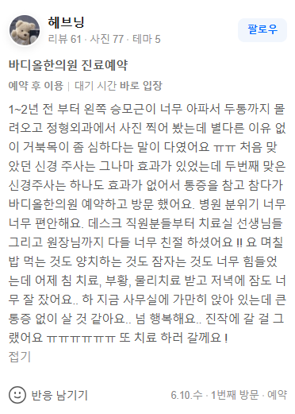

치례 증례
"1~2년 전 부터 왼쪽 승모근이 너무 아파서 두통까지 몰려오고 정형외과에서 사진 찍어 봤는데 별다른 이유 없이 거북목이 좀 심하다는 말이 다였어요 ㅠㅠ 처음 맞았던 신경 주사는 그나마 효과가 있었는데 두번째 맞은 신경주사는 하나도 효과가 없어서 통증을 참고 참다가 바디올한의원 예약하고 방문 했어요. 병원 분위기 너무 너무 편안해요. 데스크 직원분들부터 치료실 선생님들 그리고 원장님까지 다들 너무 친절 하셨어요 !! 요 며칠 밥 먹는 것도 양치하는 것도 잠자는 것도 너무 힘들었는데 어제 침 치료, 부황, 물리치료 받고 저녁에 잠도 너무 잘 잤어요.. 하 지금 사무실에 가만히 앉아 있는데 큰 통증 없이 살 것 같아요.. 넘 행복해요.. 진작에 갈 걸 그랬어요 ㅠㅠㅠㅠㅠㅠㅠ 또 치료 하러 갈께요 !"

컴퓨터나 스마트폰 사용으로 인해 경추의 정상적인 C자 커브가 무너지고 거북목 변위가 심화되면, 머리의 하중이 경추 전체로 고르게 분산되지 못하고 상부 교차 증후군을 유발합니다. 이 과정에서 목 뒤쪽과 왼쪽 승모근 주변의 심부 근육군에 지속적인 편심성 과부하가 걸리게 되며, 근육 내부의 허혈성 상태와 대사 노폐물 축적으로 인해 극심한 방사통과 후두신경통성 두통이 동반됩니다. 많은 이들이 통증을 빠르게 차단하기 위해 정형외과의 신경블록 주사나 소염진통제에 의존하지만, 이는 일시적인 신경 전도 차단 효과에 불과합니다. 단지 접근성이나 편의성만을 앞세운 365일 야간진료 기관의 물리치료, 혹은 표층 근육만 강하게 자극하여 조직 손상을 가하는 도침 치료, 관절의 순간적인 마찰음(스러스트) 유도에만 치중하는 일반 추나요법으로는 경추 하부와 흉추 상부의 고착된 부정렬 벡터를 근본적으로 되돌릴 수 없습니다. 중력 중심선이 제자리를 찾지 못하면 주사 효과가 떨어지는 순간 통증과 일상생활의 장애는 즉각적으로 재발하게 됩니다.
만성적인 승모근 통증과 두통의 굴레에서 벗어나기 위해서는 퇴행성 척추 질환의 근본적인 구조적 원인 개선을 목표로 하는 솔루션이 반드시 동반되어야 합니다. 바디올한의원의 SART(공간척추정형술)는 전통 정골의학(Osteopathy) 및 추나요법의 생체역학적 원리를 기반으로 발전하여, 척추 분절 간의 물리적 공간을 확보하는 보존적 교정 기법입니다. 강한 수동적 충격이나 위태로운 꺾기 동작 대신, 환자의 경추 곡선과 디스크 압박 상태를 정밀하게 파악한 후 특수 교정 도구를 사용하여 변위된 상부 흉추와 경추 분절 사이의 좁아진 공간을 부드럽게 분리하고 가동성을 재건합니다.
이 교정 과정을 통해 경추 주변 심부 인대와 근육의 기계적 수용기가 적절히 자극받아 척추 고유의 바이오메카닉스(생체역학)적 균형이 정상화되며, 억눌려 있던 추골동맥의 혈류 흐름과 후두신경의 압박 벡터가 부드럽게 해소됩니다[1]. 근본적인 중력축이 바로 서면서 승모근이 부담해야 하던 비정상적인 견인력이 사라지게 되며, 이는 영통, 광교, 동탄 등 주변 지역에서 무수한 주사 치료와 도수치료 실패를 겪은 환자들이 수술 전 단계에서 안전하게 선택할 수 있는 생체역학적 보존 치료의 대안으로 수원 인계동 바디올을 찾는 학술적 근거입니다[2].
무너진 턱관절과 상부 경추, 흉추의 연계 정렬을 바로잡고 좁아진 경추 분절 간격을 안전하게 넓혀 후두신경 압박과 승모근의 과긴장을 해소합니다.
신경 압박 부위와 승모근 심부 부착부의 혈행 저하로 인한 유착을 이완하고, 천연 약침 성분을 통해 주변 조직의 염증을 신속히 배출하여 손상된 경추 주변 인대의 회복을 도모합니다.
[1] Schneider M, et al. (2015). Comparison of spinal manipulation methods and usual medical care for acute and subacute low back pain. Spine. (PMID: 25433199 / DOI: 10.1097/BRS.0000000000000684)
[2] Paige NM, et al. (2017). Association of Spinal Manipulative Therapy With Clinical Outcomes and Adverse Events Among Patients With Low Back Pain: A Systematic Review. JAMA. (PMID: 28399251 / DOI: 10.1001/jama.2017.3086)